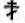

|
| A B C D E F G H I J K L M N O P Q R S T U V W X Y Z |
The Uniat churches of the Byzantine or Greek Rite were almost unknown to the United States some twenty-five years ago [1884]. Occasionally a priest of that rite from Syria came to America to ask assistance for his people who were struggling amid the Moslems, but while his visit was a matter of curiosity, his rite and the peoples who followed it were wholly unknown to American Catholics. Today, however, emigration has increased to such an extent and is drawn from so many lands and peoples that there are representatives of most of the Eastern rites in America, and particularly those of the Greek Rite. These have lately arrived in large numbers and have erected their churches all over the country. The chief races which have brought the Greek Rite with them to the United States are the various Slavs of Austro-Hungary, and they are now approaching such a position of material well-being and intellectual development as to be reckoned with as one of the factors of Catholic life in the United States. Other races have also brought the Greek Rite with them and established it where they have settled. The advent of the Slavs into the United States really commenced about 1879-1880. Those of the Greek Rite came from the north-eastern portion of the Austro-Hungarian monarchy, where they inhabited chiefly the northern and southern slopes of the Carpathian Mountains, which form the boundary line between Galicia and Hungary. The first of the new-corners were miners in the coal districts. During the troublous times in Pennsylvania, from 1871 to 1879, when the "Molly Maguires" terrorized the mining districts and practically defied the authority of the State, the various coal companies determined to look abroad for foreign labour to replace their lawless workmen, and so they introduced the Austrian Slav to the mining regions of Pennsylvania. His success in wage-earning induced his countrymen to follow, and the coal companies and iron-masters of Pennsylvania were quick to avail themselves of the new and less costly labour. This was before any of the present contract labour laws were enacted. The Slav was willing to work for longer hours than the English-speaking labourer, to perform heavier work, and to stolidly put up with inconveniences which his predecessor would not brook. He came from a land in which he had originally been a serf (serfdom was abolished in Austria-Hungary in 1848, and in Russia in 1861), then a degraded poverty-stricken peasant with hardly anything to call his own, and it was no wonder that America seemed to offer him boundless opportunity to earn a living and improve his condition. At first he was a cheap man; but in the course of a very short time the Slav became not a mere pair of strong hands, but a skilled worker, and as such he drove out his competitors, and his success drew still more of his countrymen across the sea. In the anthracite coal region of Pennsylvania there were in 1880 but some 1900 Slavs; in 1890, over 40,000; and in 1900, upwards of 81,000. The same proportion holds good of the bituminous coal-mining districts and of the iron regions in that and other states. Taking simply the past four years (1905-1908), the immigration of the Slovaks and Ruthenians, both of the Greek Catholic Rite, has amounted to 215,972. This leaves out of consideration the immigration (147,675) of the Croatians and Slavonians for the same period, though a considerable portion of them are also of the Greek Rite. These Slavs brought with them their Greek Catholic rites and practices, but they were illiterate, ignorant, the poorest of the poor, and knew nothing of the English language. Herding together in camps and settlements, and working like serfs at the most exhausting labour, they had but little opportunity to improve themselves or to learn the language, customs, and ways of the Americans around them, while both American and foreign-born Catholics failed to recognize in them fellow-Catholics, and so passed them scornfully by, and the American of the older stock and anti-Catholic prejudices too often held them in supreme contempt. Yet as soon as they gathered some little substance and formed a. settled community they sent for their clergy. When these arrived, they, too, were often imbued with national and racial prejudices, and knew too little of the English language and American ideas and customs to initiate immediately the progress of their people, yet they created for them churches, schools, and a branch of their native literature upon American soil, and gradually brought them into touch with the people around them. In this they were seconded by many educated laymen who also followed their countrymen, and the result has been that the Greek Rite has now been established in the United States much more solidly and with greater virility than it is in many of the dioceses in south-eastern Europe. Other races and nationalities have also established themselves besides the Slavs; and there are in America also the Rumanians, the Syrians, and the Italians who follow the Greek Rite. But the people who have been foremost and most enthusiastic inthe support of and devotion to their Oriental Rite are the so-called Ruthenians, a name used to designate the Ruthenians proper and also those Slovaks who are their immediate neighbours. In order to understand fully their position and relations in America, some of their history and peculiarities should be given.
The word Ruthenian is derived from the later Latin Ruthenia, the former name for Russia, and of course the Ruthenians might well be called Russians. Indeed, the present Ruthenians declare that they are the original Russians, and that the present Russia and Russians owe their name and nation to the accident of successful conquest and assimilation. Their own name for themselves is Rusini, and it is probable that Ruthenian was merely an attempt to put this word into Latin. The word Rutheni is first found in the writings of the Polish annalist, Martinus Gallus (1190), and the Danish historian, Saxo Grammaticus (1203). The original word Rusini is derived from Rus, the abstract word for Russian fatherland or dwelling-place of the Slavic people; and the English word "Russian" may therefore mean a derivative from the word Rus, as denominating the race, or it may mean a subject of the Russian Empire. The former is russky the latter rossiisky, in the Russian and Ruthenian languages, and hence, while the first word is translated either as Russian or Ruthenian, it carries no special reference to the Russian Empire. These people are also called "Little Russians" (an expression chiefly used for them in the Russian Empire), originally an allusion to their stature as contrasted with the Muscovites. Their language is known as Ruthenian or Little Russian, and is spoken in Northern Hungary, Galicia Bukowina, and in the Provinces of Volhynia, Podolia, Chelm, and Kiev in Russia. It is quite similar to the Russian language of the Russian Empire (sometimes called Great Russian), bearing about the same relation to it as Lowland Scotch does to English, or Plattdeutsch to German, and rather closer than Portuguese does to Spanish. The Ruthenians (in Austria) and Little Russians (in Russia) use the Russian alphabet and write their language in almost the same orthography as the Great Russians of St. Petersburg and Moscow, but they pronounce it in many cases very differently, quite as the French and English might pronounce differently a word written the same in each language. This fact has led in late years to a recension of the Russian alphabet in Galicia and Bukowina by the governmental authorities, and by dropping some letters and adding one or two more and then spelling all the words just as they are pronounced, they have produced a new language at least to the eye. This isthe "phonetic" alphabet and orthography, and as thus introduced it differentiates the Ruthenian language of these provinces more than ever from the Russian. The phonetic system of orthography is still fiercely opposed at home and in America, and as an Austrian governmental measure it is regarded by many as an effort to detach the Ruthenians from the rest of the Russian race and in a measure to Polonize them. This battle of the reformed phonetic spelling rages as fiercely in the United States as in Austria. Indeed the Greek Catholic bishop here has found it necessary to issue his official documents in both the phonetic and the etymologic spelling (as the older form is called), so as to meet the views of both parties. The phonetic spelling has never been introduced among the Ruthenians in Hungary, and their section of the language is still written in the customary form, there and in the United States. Besides the Ruthenians there are also the Slovaks who live in Northern and North-western Hungary, close neighbours to the Ruthenians, who are Greek Catholics, and who speak a language almost like the Bohemian, yet similar to the Ruthenian. It is written, however, with Roman letters, and the pronunciation follows the Bohemian more than the Ruthenian. These people seem to have been originally Ruthenian, but became gradually changed and moulded by the Bohemians and their language and for a long time wrote their language in the same manner as the Bohemian. The Bohemians, however, are in the Austrian part of the empire, while the Slovaks are in Hungary. They have emigrated to the United States in large numbers, and are about equally divided between the Greek and Roman Rites. This again necessitates the publication of church matters, prayer books, journals, etc., in the Slovak language. It illustrates the difficulties of the Greek Catholic priests in the United States since they are likely to have in their parishes Ruthenians (of the old and new orthographies), Slovaks, and even those who speak only Hungarian, having lost their Slavic tongue. It is no uncommon thing to find a Greek Catholic priest capable of speaking five languages: Ruthenian, Slovak, Hungarian, German, and English. It is these people as a whole who are comprehended under the term Ruthenian, although that term applies strictly to those speaking Russian and using the Russian alphabet. After the eleventh century the larger portion of Russians fell away from the unity of the Church in the schism of Constantinople, while a minority continued faithful to the Catholic Church, and later many more returned to unity. The Holy See, therefore, made use of the ancient word Ruthenian to designate those Russians who followed the Greek Rite in unity with the Holy See, in order to distinguish them from the Northern Russians who adhered to the schism. Later on, those Russians who joined the union under the Polish kings received the same name, and the word Ruthenian is today used exclusively to designate the Russians of Austro-Hungary, who are Greek Catholics in contradistinction to the Russians of the Russian Empire, who are of the Greek Orthodox faith.
The language of the Mass and the other liturgical services according to the Byzantine Rite is the ancient Slavonic (staroslavianski), and the Greek Liturgy was originally translated by Sts. Cyril and Methodius about the year 868, and it has remained substantially the same ever since. It is curious to notice that the Ruthenian language is much closer, both in spelling and pronunciation, to the church Slavonic than the present Russian language of St. Petersburg and Moscow. The letters in which the church books are printed are the Cyrillic, or Kirillitsa said to have been invented or, rather, adapted by St. Cyril from the Greek alphabet, together with some additional letters of his own invention. It consists of forty-three letters of archaic form as used in the church books, but has been altered and reduced in modern Russian and Ruthenian to thirty-five letters. In the year 879 Pope John VIII formally authorized the use of the Slavonic language forever in the Mass and in the whole liturgy and offices of the Church, according to the Greek Rite, and its use has been continued ever since by the Catholic and the Orthodox (schismatic) Greeks of the Slavic races. This is the language used in the Sluzhebnik (Missal), Trebnik (Ritual), Chasoslov (Book of Hours), and other church books of the Ruthenian Greek Catholics in America.
After the schism of Constantinople (1054) most of the Russians became estranged from the unity of the Church. (See under GREEK CHURCH, Vol. VI, pp. 760-62.) In 1595 the Russian bishops of Lithuania and Little Russia determined to return to unity with the Holy See, and held a council at Brest-Litovsk, at which a decree of union was adopted, and where they chose two of their number, Ignatius Potzey and Cyril Terletzki, to go to Rome and take the oath of submission to the pope. They declared that they desired to return to the full unity of the Church as it existed before the schism of Photius and Cærularius, so as to have in Russia one united Catholic Church again. No change in their rites or their calendar was required by Rome, but the whole of the ancient Greek Liturgy, service, and discipline (excepting a few schismatic saints' days and practices) was to go on as before. In December, 1595, Clement VIII solemnly ratified the union of the two Churches in the Bull "Magnus Dominus". On 6 October, 1596, the union between the Eastern and Western Churches was proclaimed and ratified in the Russian part of the Kingdom of Poland. A large number of the Russian bishops immediately went over to the union. In Chelm the Russian Bishop Zbiruiski led the way with his whole diocese, and his successor, Methodius Terletzki, was a valiant champion of the Uniat Church. This Greek Uniat Church even produced a martyr for the Faith, St. Josaphat, Archbishop of Polotzk, who was slain by the Orthodox partisans in 1633. In Galicia, however, the union was slower. While priests and congregations became Uniat, the Bishops of Peremysl and Lemberg stood out for nearly a century. But on 23 June, 1691, Innocent Vinnitzki, Bishop of Peremysl, joined the union, and in 1700 Joseph Shumlanski, Bishopof Lemberg (it was afterwards restored to metropolitan dignity by the pope in 1807), also took the oath of union with the Holy See. From that time till now the Russians on the northern slopes of the Carpathian Mountains and on both sides of the River Dniester have been united with Rome. On the southern side of the Carpathians the Russians also accepted the union. In the year 1636 Vassili Tarasovitch, Bishop of Munkács, acknowledged the pope as the head of the Church and for it he was persecuted, imprisoned and forced to resign his see. But union with the Holy See could not be stayed by such means, and on 24 April, 1646, it was accomplished in the city of Ungvar by Peter Rostoshinski; the then Bishop of Munkács, and George Yakusitch, Bishop of Agri (Erlau). These two bishops in solemn council, with sixty three priests, abjured the schism and confessed themselves Greek clergy holding the Faith of Sts. Cyril and Methodius in communion with Rome. Since that time the Ruthenian people (including the Greek Slovaks) in the Kingdom of Hungary have acknowledged the pope as the visible head of the undivided Catholic Church.
These Ruthenians have continued to practise their ancient Greek-Slavonic rites and usages, and their forms of worship introduced into the United States seem strange to the Catholic accustomed only to the Roman Rite, and have made them objects of distrust and even active dislike, so that a few of the most salient differences may be pointed out, although a full statement will be found in the various articles on the Eastern rites, ceremonies, and vestments. The Mass itself is said in ancient Slavonic, the altar is separated from the body of the church by a high partition called the iconostasis, upon which the pictures of Christ and His Mother, as well as various saints, are placed, and the vestments of the Mass are quite different. The stole is a broad band looped around the neck and hanging straight down in front, the chasuble is cut away at the front and closely resembles the Roman cope, and instead of the maniple two broad cuffs are worn, while a broad belt takes the place of the girdle or cincture. Married men may be ordained to the diaconate and priesthood; but bishops must be celibate, nor can a deacon or priest marry after ordination. Priests impart the Sacrament of Confirmation to children immediately after baptism, and Communion is given to the laity under both forms, the consecrated species being mingled together in the chalice and administered to the communicant with a spoon. Organs are not used in their churches, and their church year follows the Julian Calendar, which is now thirteen days behind the Gregorian calendar in use in the United States and Western Europe. Besides this, the Ruthenians (and the Russian Orthodox likewise), display the so-called "three-armed" (or Russian) cross fashioned in this manner upon their churches and use it upon their missals, prayer-books, paintings and banners, as well as other objects. They make the sign of the cross in the reverse direction to the Roman method, and in their religious services the men and women are segregated from each other upon different sides of their churches.
It is from these people, inhabiting Galicia, Bukowina, and Hungary, that the Ruthenian Greek Catholic population has come. Their earliest immigration to the United States began in 1879, from the western portion of Galicia near the Carpathian Mountains, the so-called Lemkovschini, and then spread throughout the Galician and Hungarian sides of the mountains. At first it was hardly noticed, but it grew year by year, the earliest immigrants coming from Grybow, Gorlice, Jaslo, Neu Sandec, Krosno, and Sanok in Galicia, and from Szepes, Saros, Abauj, and Ung in Hungary, until finally the governmental authorities began to notice it. At the post offices in many of the mountain places in the Ruthenian portion of Galicia it was observed that the peasants were receiving large sums of money from their fathers, sons, or brothers in America. The news spread rapidly, the newspapers and officials taking it up, and so emigration was at once stimulated to the highest degree. Every year it has increased, and Ruthenian societies are formed here to assist their newly-arrived brethren to find employment and to give information to those at home about America. It is impossible to tell exactly how many Ruthenian and Slovak Greek Catholics have come to the United States, because no statistics have been kept by the United States Government in regard to religious faith of immigrants, and not always accurate ones in regard to race or nationality. Still the immigration reports show that immigration from Austria-Hungary from 1861 to 1868 was annually in the hundreds; and from 1869 to 1879 it ranged from 1500 to 8000 annually; and in 1880 it suddenly rose to 17,000. From 1880 to 1908 the total immigration from Austria-Hungary to the United States amounted to 2,780,000, and about twenty percent of these were Ruthenians and Slovaks. Within the last four years (1905-1908) the immigration of the Slovaks and Ruthenians has amounted to 215,972. To this must be added the Croatians and Slavonians (117,695), a large proportion of whom are of the Greek Rite. It is estimated that there are at present in the United States between 350,000 and 400,000 Greek Catholic Ruthenians, including as such the Greek Catholic Slovaks and Croato-Slovenians. The largest number (over one-half) are in Pennsylvania, while New York, New Jersey, and Ohio have each a very large number of them, and the remainder are scattered all through the New England and Western states. From the best information obtainable in advance of the coming census of 1910 their distribution is as follows:--
| Pennsylvania New York New Jersey Ohio Connecticut Illinois Massachusetts Rhode Island Missouri | 190,000 50,500 40,000 35,500 10,000 8,000 7,500 1,500 6,500 | Indiana Minnesota Colorado, Dakota, Nebraska and Montana, about West Virginia, Virginia and the Southern States, about | 6,000 3,000 8,000 5,000 |
After the Ruthenian immigration had begun in considerable numbers, it was but natural that they should desire to establish a Church of their own rite. At Shenandoah, Pennsylvania, the Ruthenian settlement had so increased that towards the end of 1884 they sent a petition to Archbishop (afterwards Cardinal) Sylvester Sembratovitch, Metropolitan of Lemberg praying that a Greek Catholic priest might be sent to them to found a parish of the Greek Rite at that place. The petitioners promised to build a church for him if he were sent. In the following year (1885) Rev. Ivan Volanski, of the Diocese of Lemberg, arrived in the United States the first Greek Catholic priest to take up work among his people here. On his arrival he presented himself in Philadelphia with his letters but being a married priest, he encountered great difficulty in being recognized as a Catholic priest in good standing. However, he proceeded to Shenandoah, where under great difficulties and discouragements he organized his congregation and for about a year celebrated Mass and other services in a hired hall, for he was unable to obtain the use of the local Latin churches for Greek services. The matter of his regularity and his acceptance as a priest in Pennsylvania for the Ruthenians was finally arranged through Cardinal Sembratovitch. Early in 1886 he completed at Shenandoah a little frame church dedicated to St. Michael the Archangel, the first Greek Catholic church in America. He then organized there the first Greek Catholic Society, that of St. Nicholas, built and organized & small parochial school, and then proceeded to form congregations and to found churches in other places where the Ruthenians were thickly settled. During his stay he organized congregations and started churches at Hazleton (1887), Kingston (1888), and Olyphant (1888) in Pennsylvania, at Jersey City, New Jersey (1889), and at Minneapolis, Minnesota (1889). Finding his Ruthenian people without any reading-matter in their own language, he sent to Galicia for Russian type, and in the latter part of 1886 he obtained a few fonts from the Shevchenko printing office at Lemberg. He then commenced the publication in "phonetic" Ruthenian of a small paper issued every two weeks at Shenandoah under the name of "America". This paper lived until about 1890, but got involved in the labour troubles in the mining districts which destroyed much of its usefulness. In the spring of 1887 the Metropolitan of Lemberg sent him another priest, Rev. Zeno Lakovitch (unmarried), and a lay teacher, Volodimir Semenovitch from the University of Lemberg. Father Lakovitch laboured at Kingston and at Wilkesbarre, where he died a year later. In 1888 Rev. Constantine Andrukovitch was sent from Lemberg, and, in addition to his parochial work, he, with Father Volanski, undertook to establish a series of stores in several towns in Pennsylvania to sell goods to the Ruthenians and thus avoid the enormous prices which the mining companies charged them. The business venture was unsuccessful, and, with other matters, it caused the recall of Father Volanski to Galicia. He remained there some time, then was sent as a missionary to Brazil, where his wife died, when he returned to Galicia, where he was a parish priest until his death in 1905. This business venture also caused the suspension of Father Andrukovitch, who returned to Galicia in 1892. The next three Greek clergymen were Rev. Theophan Obushkevitch (of Galicia), Rev. Cornelius Laurisin, and Rev. Augustin Laurisin (of Hungary), who took up their missionary work energetically. The first two are still Greek Catholic parish priests in this country. Since their coming there has been a constant accession of Ruthenian Greek priests from Galicia and Hungary, and the building of churches and schools has gone on with increasing success. Even quite costly churches have been built. In Jersey City the old church has given way to a fine stone and brick church, which is an excellent specimen of Russian architecture, while at Homestead and Shamokin, Pennsylvania, there are quite costly churches erected. Many of the Greek churches are purchases from Protestant denominations altered and rearranged for the necessities of their rite, while one or two are churches brought over from the schismatics. The first Greek Catholic Mass in New York City was celebrated in the basement of St. Brigid's church on Avenue A (which was put at the disposal of the Greeks by the late Archbishop Corrigan), on 19 April, 1890, by the Rev. Alexander Dzubay, who is still in active parish work in America. This Greek congregation afterwards bought a church in Brooklyn (St. Elias, 1892), and there was no Ruthenian church in Manhattan until the Greek Catholic church of St. George was opened in 1905. In February, 1909, the Greek Bishop Soter bought a Protestant Episcopal church in Philadelphia, Pennsylvania, refitted it, and consecrated it as the Greek Cathedral of St. Mary of the Immaculate Conception, and in the adjoining parish house and rectory will also open a seminary for the education of American priests of the Greek Rite. Of course many Ruthenian settlements in various localities are too poor to build and maintain a church, nor are there just at present sufficient priests in America to attend to their spiritual needs. Still there are at present (1909) about 140 Ruthenian Greek Catholic churches in the United States and there are also ten more new ones projected for waiting congregations. Their churches are distributed as follows:--
| Pennsylvania New York Ohio New Jersey Connecticut Illinois Massachusetts | 80 14 12 10 4 4 4 | Indiana Missouri West Virginia Minnesota Rhode Island Virginia | 3 3 2 2 1 1 |
The Ruthenian Greek Catholic clergy in the United States consists (1909), of one bishop and 118 priests, originating from the following dioceses:--
| Diocese | Monks | | ||||||||
| | | | ||||||||
| Lemberg | | | | | ||||||
| Premysl | | | | |||||||
| Stanislau | | | | |||||||
| Eperies | | | | | ||||||
| Munkács | | | | |||||||
| Kreutz | | |||||||||
| Scranton | | | ||||||||
| Philadelphia | | |||||||||
| Pittsburg | | |||||||||
| 6 | 25 | 64 | 23 | |||||||
Several of these priests are converts from the Orthodox Greek Church in the United States. As has been said, men who are already married are ordained to the diaconate and priesthood in the Greek Church, and so it naturally followed that married priests were sent to America. While a married priesthood seems repugnant to a Catholic of the Latin Rite, yet it is strongly adhered to by the Greek Catholics as vaguely a part of their nationality and Eastern Rite. All American Greek Catholic priests will hereafter be ordained from celibate candidates only, according to the provisions of the Apostolic Letter "Ea semper", which will be referred to later. The growing importance of the Greek Rite in America, the dissensions arising out of old-country political factions among the Ruthenians, which will be mentioned later on, and which occasioned serious interference with the normal growth of the Greek Church, and the increasing intensity of the efforts of the Russian Orthodox to detach the Ruthenians in America from their faith and unity (see GREEK ORTHODOX CHURCH IN AMERICA) caused the Holy Father in 1907 to provide a Greek Catholic bishop for America. Previous to this (1902) the Holy See had sent the Right Rev. Andrew Hodobay, titular abbot and canon of the Greek Diocese of Eperies, as Apostolic visitor to the Ruthenians in America, who examined the conditions of the Catholics of the Greek Rite in all parts of the United States and returned to Europe in 1906 with his report. The choice of a bishop for the Ruthenian Greek Catholics fell upon the Right Rev. Stephen Soter Ortynski, a Basilian monk, hegumenos of the monastery of St. Paul, Michaelovka, Galicia. On 12 May, 1907 he was consecrated titular Bishop of Daulia by the Most Rev. Andrew Roman Ivanovitch Scheptitzky, Greek Metropolitan of Lemberg, and the other Greek bishops of Galicia, and he arrived in America on 27 August, 1907. Shortly after his arrival (September, 1907) the Apostolic Letter "Ea semper", concerning the new bishop for the Ruthenian Greek Catholics in the United States his powers and duties, and the general constitution of the Greek Rite in America was published. It created considerable dissatisfaction among the Greek clergy and laity inasmuch as it did not provide for any diocesan power or authority for the new bishop, but placed him as an auxiliary to the Latin bishops, and as it modified several of their immemorial privileges in various ways. The Sacrament of Confirmation was thereafter to be withheld from infants at baptism, and was not to be conferred by priests, but was reserved for the bishop only (as in the Latin Rite and among the Greeks in Italy), and married priests were not thereafter to be ordained in America or to be sent thither from abroad, while the regulations as to the marriage of persons of the two rites were also modified. The Greek Ruthenian laity saw in it an attack upon their Slavic nationality and Eastern Rite, an idea which the Russian Orthodox Church eagerly fostered and magnified. They were told by the Orthodox that the whole letter was a latinization of their Greek Rite in regard to confirmation and Holy orders, and was a nullification in America of the Decrees of the popes that their rite should be kept intact. This resulted in some losses (about 10,000) from the Ruthenians to the Russian Church, but already many of them are coming back. Matters, however, adjusted themselves, and the work of the new bishop is having good results. The whole matter of a Greek bishop in America is so far in an experimental stage, and it rests upon the extent of the current and future immigration, the stability and solidarity of the Ruthenians in their adherence to their faith and rite, as to what powers and authority their bishop shall ultimately have. Where there is an evident and actual need for it the Holy See has always granted the erection of Oriental dioceses, but where a minority of a population seems bound to become assimilated with, and eventually absorbed into, the surrounding population the case may be entirely otherwise. The newly appointed bishop has had success in establishing churches and parochial schools and in inducing his Ruthenian flock to become American citizens and identify themselves with American life while not abandoning their faith and their Eastern Rite. He aims to establish English-Ruthenian schools in each Greek parish and to open a Ruthenian American seminary at Philadelphia for the education of American-born Ruthenians as priests of the Greek Rite. There is already one American-Ruthenian priest, lately ordained. In purely theological matters they will be educated as in Latin seminaries, if not actually sent there for lectures, but in the Oriental church rites, discipline, liturgical language, music, and customs the proposed seminary will fill a place for the Ruthenians which our present diocesan seminaries do not fill. The number of church or parochial schools of the Ruthenians is about fifty, where instruction in English, Ruthenian, church catechism, and the elements of a general education is given. No organized Sunday-school system has as yet been established amongst them, nor are there any nuns or religious engaged in teaching in the United States.
In order to understand somewhat clearly the situation of the Ruthenians in America, account must be taken of their national home politics, which they bring with them and fight out often quite bitterly in this country. As already said, they are from the northern and southern slopes of the Carpathian Mountains. The northern Ruthenians derisively call their southern brethren "Hungarians" (Madyari), while the latter return the compliment by calling the former "Poles" (Poliaki). The point of this lies in the fact that each of the nationalities named is cordially detested by the Ruthenians on either side. But these are merely surface divisions between the two bodies of the same race. Their actual factional differences are much deeper. There may be said to be, broadly speaking, three Ruthenian parties or factions in the United States: (1) The Moscophiles, or Moskalophiles (Moskal is the Little Russian word for a Great Russian), who aim at an imitation, if not an actual adoption, of all things Russian as found in the present Empire of Russia looking towards Moscow as the seed and kernel of Russian or Slavic development, and who are strong supporters of Panslavism; (2) the Ukraintzi, or Ukrainians (the Ukraine is the adjoining border-land provinces of Russia and Galicia), who stand for the interests of the Ruthenian people in Austria and of the Little Russians in Russia, as distinct and apart from the Great Russians, and who desire to develop the Ruthenian (Little Russian) language, literature, and race along their own lines, entirely distinct and apart from that of the present-day Russian Empire; and (3) the Ugro-russki, or Hungarian Ruthenians, who keep all the old Russian racial traditions, reverencing their Russian language, literature, and ancestry as models to follow in their development, but at the same time refusing to follow the ideas of Moscow and St. Petersburg in such development, either in Hungary or in the United States. The first two parties are Galicians, the last one Slovaks and Hungarian Ruthenians. These parties are sometimes divided into smaller factions, perplexing for an outsider to understand, such as those who desire to introduce the Hungarian language and customs, even using Hungarian in the liturgy of the Church. It is needless to say that none of these larger parties ever agree upon any one subject other than their Slavic nationality and Greek Rite. The Moscophiles often unite with the Greek Orthodox and Russian societies upon the slightest pretext when Russo-Slavic ideals are to be proclaimed, and are fiercely against everything that does not look Russiaward, for Russia is their big brother. On the other hand the Ukraintzi will have nothing to do with modern Russia; it is behind the age and lags in the march of civilization; and they have besides offended both the other parties by adopting the "phonetic" style of spelling. This offence seems to be intensified because the new Greek bishop is somewhat of their way of thinking. The Ugro-russki are violently opposed to whatever does not accord with the racial views and traditions of the Ruthenian and Slovak people within the borders of Hungary, and do not agree with the views and actions of either of the other two parties. Consequently, the Greek Catholic bishop has to publish his official communications in Ruthenian, both phonetic and old-style, and in Slovak, in order to reach all his people.
Of course these Greek Catholics of such varied views have organized into societies. Each church has its own local religious and singing societies, but there are other and larger bodies known as "brotherhoods" or lodges (bratstva), which have been of great assistance in building up the Ruthenian churches. They are usually of the nature of mutual benefit societies, assist in finding work, helping in religious matters and the like, having always the Greek Rite and the Ruthenian race as their main inspiration. Some of them provide that their members must show that they have made their Easter communion or forfeit membership, and provide for the dropping of a member when he ceases to be a Catholic. These brotherhoods or lodges are combined into a general federation or union which takes in the whole United States. It has its annual convention composed of delegates from the various brotherhoods and always has some well-known Greek Catholic priest as its spiritual director. The largest and oldest of these federated societies is the "Soyedineniya Greko-Kaftolicheskikh Russkikh Bratstv" (Russian Greek Catholic Union), which was founded in Pennsylvania in February, 1892. It is almost wholly composed of Slovaks and South-Carpathian Ruthenians. It now (1909) has 542 brotherhoods and 22,490 members, and has besides a junior organization for young people in which there are 163 brotherhoods and 5400 members, and is in a flourishing condition in every way. It also publishes a weekly Greek Catholic newspaper at Homestead, Pennsylvania — the "Amerikansky Russky Viestnik (American Russian Messenger), printed both in the Russian and the Slovak languages. In Ruthenian politics it is the representative of the Ugro-russki party. The second of these federations is the "Russky Narodny Soyus" (Russian National Union), which was founded in 1894 and is a Galician offshoot from the preceding society. It is chiefly composed of Galicians who are Ukrainians, and who express themselves strongly against the Russian Empire and the Orthodox Church. It now has 249 brotherhoods and 12,760 members, and it likewise publishes a weekly newspaper, the "Svoboda" (Liberty), which is printed in New York City, in "phonetic" Little Russian. The third of these federations is the "Obshchestvo Russkikh Bratstv" (Society of Russian Brotherhoods), which was founded 1 July, 1900. It is composed almost wholly of Galicians of the Moscophile party, and a small minority of its membership is also made up of Galicians who are either Greek Orthodox or of Orthodox proclivities, for it is quite pro-Russian and opposed to the Ukrainians. It has now 120 brotherhoods and 6530 members, and publishes its weekly newspaper, Pravda (Truth) at Olyphant, Pennsylvania, in the Ruthenian old-style spelling. There is also the "Rimsko a Greko Katolicka Jednota" (Roman and Greek Catholic Union) of Pennsylvania, a Slavic organization which has some 175 brotherhoods and about 9000 members, and it is estimated that about one-third of these are Greek Catholic. This federation also publishes a weekly paper, "Bratstvo" (Brotherhood) in the Slovenian language. Besides these publications there is also the "Dushpastyr" (The Pastor), published in New York which is exclusively a religious periodical and devoted solely to the affairs of the Greek Catholic Church in America. In it the official utterances of the Greek bishop are usually published. There are also many other American Ruthenian papers and periodicals which have nothing whatever to do with church matters, but are devoted to labour questions, national issues, and to Socialism. Unfortunately, many of these publications, even the Catholic ones, exhibit too much of a tendency to attack their opponents in strong language and to belittle the efforts of those not of their party, and their usefulness for good is thereby lessened. From time to time various religious works and a number of booklets on church and national topics have been published in Slovak and Ruthenian, and every year there are issued a number of year-books or calendars containing a variety of information and illustrations concerning the Ruthenian Greek Catholics in America and abroad.
The immigration of the Ruthenian Greek Catholics into the United States and the organization of their churches and rite has been too recent to properly speak by name of any distinguished representatives of their clergy or laity. Nearly everyone who took a prominent part in their settlement and development is still alive and engaged in active work, while a vigorous younger generation born on American soil is now growing up. Among the Greek priests here in America are several who are authors of learned works upon the church language and ritual, others who have filled posts of considerable distinction in the dioceses in Hungary and Galicia whence they came, and many who have constantly employed their tongue and pen in the education and improvement of their fellow-countrymen in this country. There is, however, no religious order of women of the Greek Rite, nor an association whatever of women devoted to church service in the United States nor has any attempt been made so far, either on the part of the clergy or laity, to establish here anything of the kind.
In addition to the Ruthenian Greek Catholics in the United States there are a large number of them in Canada. They are principally settled in the provinces of Manitoba, Alberta, and Saskatchewan, where they have devoted themselves to agricultural pursuits. It is said that a Ruthenian often works hard in the United States saves up his money, and emigrates to Canada, where he can obtain cheap land under the homestead acts. There is besides a considerable direct immigration from Galicia and Hungary, but the majority of the Canadian Ruthenians are Galicians. Their first church (St. Nicholas) in Canada was built about 1900 at Winnipeg by the Basilian monks who are in charge of the Greek missions of the northwest. The Very Rev. Platonides Filas, O.S.B.M., who is now (1909) the superior of the order in Galicia, was the first missionary sent there. Afterwards, in 1905, another church (St. Josaphat) was built at Edmonton. Later on a monastery was established in Winnipeg, with a branch at Monaster, Alberta. From these central points, there are now (1909) over sixty missionary stations established with small Greek chapels at Oaknook, Swan River, Barrows, Ethelbert, Garland, Grand View, Minatonas, Yorkton, Beaverdale, Rabbit Hill, Star, Lamont, Nundare, and Skaro. In this section the Ruthenians have to contend with the Russian Orthodox missions, which are well provided for, and with certain schismatics from the Russian Orthodox known as the "Seraphimites", or independent Græco-Russian Church. There are three missionary communities of the Basilian monks: at Winnipeg, Edmonton, and Monaster. The Greek clergy in Canada consist of eight monks and four secular priests. The number of Ruthenian Greek Catholics is between 45,000 and 50,000, widely scattered through these northwest territories. In Canada there is a religious order of women of the Greek Rite, the Servants of Mary (14 in number), whose mother-house is in Lemberg, Galicia. They have schools at Winnipeg, Edmonton, Monaster, and in some outlying districts. The Canadian Ruthenians publish a small paper (Canadian Farmer) and have several societies on the pattern of those in the United States.
These people come from the eastern provinces of Hungary known as Transylvania. They are of a nationality which claims to come down from the Roman colonists who were settled there by the Emperor Trajan, and hence they still call themselves Romani. These Transylvanians are really of an older political order and settlement than the independent country known as Rumania, which bounds Transylvania on the east. The inhabitants of both lands are of the same stock, but those in Hungary were organized and in possession of a fair amount of education and political rights under Hungarian rule whilst the present Kingdom of Rumania was still oppressed under Turkish rule. The latter only obtained its independence after the Russo-Turkish war of 1878, and in turn began the education and enlightenment of its people. The Rumanian language is a Latin tongue, some-what similar to Italian, but with a considerable mixture of Slavic, Greek, and Turkish words in it. It is also the language of the Mass and liturgical offices according to the Greek Rite among the Rumanians, and is an instance where the Church has made a modern tongue the liturgical language. Owing to Slavonic influences, the Rumanian language was formerly written in Slavonic or Russian characters, and this continued until about 1825, when the Roman alphabet was adopted, first by the Catholic Rumanians and then by the Orthodox, and it has been used for the Rumanian language ever since. Even for church books the Slavonic letters (the Cyrillic alphabet) had to give way to the Latin letters, just as the Slavonic Liturgy in the church services had given away to the Rumanian, and now both the Catholic and the Orthodox Mass-books and Office-books are printed beautifully in Latin letters and modern Rumanian, whether for use in the churches of Transylvania or Rumania. The Rumanian Church, although Greek in rite, was originally under the jurisdiction of Rome up to the ninth century, when Constantinople assumed jurisdiction over it, and later on, when Constantinople fell into schism, the Rumanian Church went with it. Frequently, however, during the centuries that followed, partially successful attempts were made towards reunion. At the time of the so-called Reformation in Western Europe the Calvinists endeavoured to persuade a portion of the Rumanian clergy and their flocks to embrace the new doctrines. This naturally led to an examination of matters wherein the Roman Church differed from the Calvinists, and also to the points wherein it was in harmony with the Greek Church, and later to a desire for union with it. The union of the Rumanian Greek Church in Hungary (for the other Rumanians were subjects of Turkey) with the Holy See dates from 1700. The preliminaries for union had been in progress for several years before, and once or twice had been on the eve of success. In the year just mentioned the Metropolitan Athanasius held a general synod of the clergy of Transylvania at Alba Julia (Gyulyafehervar), which declared, on 5 September, 1700, that "freely and spontaneously moved thereto by the impulse of Divine Grace, we have entered upon a union with the Roman Catholic church". This decree was signed by the metropolitan, 54 arch-priests, and 1563 priests. The act of union was confirmed at Rome in the following year, and the Greek Catholic hierarchy was for a long time the only Greek hierarchy in Transylvania. Towards the middle of the last century the Greek Orthodox Rumanian hierarchy was also established. The Rumanian Greek Catholics are very proud of their union with Rome, and church documents are often dated not only by the year of our Lord (pre anul Domnului), but also by the year of the union (pre anul de la santa unire).
The Rumanian immigrant does not seem to have begun to come to the United States until about the beginning of the present century. In the year 1900 Rumanian immigration from Transylvania and Northern Hungary began to flow towards the United States, and lately has been followed by immigration from Rumania itself. It has steadily increased until now (1909) there are between 60,000 and 70,000 Rumanians in the United States. Nearly all these have come from Hungary; only a small minority are from the Kingdom of Rumania. Those from Hungary are from the southern and western counties of Transylvania, chiefly the counties of Szatmár, Szilagy, Fogaras, Bihar, and Temes. The Greek Catholics among them number about 45,000, and they are scattered through the United States from the Atlantic to the Pacific. The chief places where the Rumanian Greek Catholics are settled are Cleveland, Youngstown, Columbus, Newark, and Cincinnati, Ohio; Sharon, Erie, Pittsburg, Windber, and Scalp Level, Pennsylvania; Aurora, Indianapolis, Indiana Harbor, and Terre Haute, Indiana; Trenton, New Jersey; St. Louis, Missouri; and New York City. They are all quite poor and are generally found, like all recent immigrants, in the humblest and poorest walks of life. They lack sufficient missionary priests of their own rite, and at present many additional priests would be welcome. The Rev. Dr. Epaminondas Lucaciu was the first Greek Catholic Rumanian priest to come to this country. He was sent here in 1904 by the Greek Catholic Bishop of Lugos, at the request of the late Bishop Horstmann of Cleveland, who was asked for a priest of their own rite by the Rumanians settled in Cleveland. When he came, he set about forming a congregation and building a church for his people of the Greek Rite. His energy and ability among his countrymen led to the erection and dedication, on 21 October, 1906, of the church of St. Helena in Cleveland — the first Rumanian Greek Catholic church in America. His zeal also led to the formation of congregations in other localities which he visited regularly. In 1908 the second Rumanian church was built and dedicated at Scalp Level, Pennsylvania, which serves as the central point for missionary work among the Rumanians of Pennsylvania. In 1909 the third Rumanian church was completed and dedicated at Aurora, Illinois, and it serves in its turn as the centre of Greek Catholic work among the Rumanians of the Western States. A fourth has just been constructed at Youngstown, Ohio. There are now (1909) four Rumanian Greek Catholic priests in the United States and more are shortly expected to arrive. Greek Catholic congregations have been formed in many localities, and they are regularly visited by the Greek Catholic priests who are here, and regular parishes will be formed and churches erected as soon as possible. A Rumanian Greek chapel is now in course of formation in New York City and awaits a priest from Transylvania. While they have a small Catholic church paper "Catholic American", they also publish a fine eight-page weekly, "Romanul", at Cleveland and New York, which gives a great deal of church news, and they also publish a little monthly magazine and an illustrated year-book in which many details of their churches, societies, and progress are given. The weekly paper was originally founded by Father Lucaciu to provide reading-matter and general news for his people, but it has since passed into other hands. Their societies are not strictly speaking church organizations, but are rather mutual benefit societies for Rumanians, and some even have a limited membership of the Orthodox, for the Rumanians of Hungary, whether Greek Catholic or Greek Orthodox, are very closely united upon racial and national feelings, and do not exhibit the hostility sometimes shown between the two Churches elsewhere. The principal societies are "Dacia Romana", "Ardealana", "Unirea Romana", and "Societatea Traian", numbering altogether about 3000 members, and generally identified with the church congregations.
About 1886 the first immigration from the Mediterranean coasts of Asia began to reach the shores of the United States, when the Armenians, Greeks, and Syrians began to swell the numbers of our immigrants. Among them came the Syrian Greeks, or those Syrians who were of the Byzantine Rite, whether Catholic or Orthodox. The name Melchite (see under GREEK CHURCH, Vol. VI, p. 755), is occasionally used to designate a Syrian of the Greek Orthodox Faith, but now it rarely has that meaning, since the schismatics prefer to be known as Syro-Arabians, at least in the United States where they are largely under Russian influence, for it is nearly always applied to the Catholics. After the Council of Chalcedon the Melchites followed the fortunes of the Greek Church of Constantinople. When it separated from Rome they also gradually became separated, merely through inertia. Occasionally a bishop became Catholic and there were sporadic attempts to reunite them with the Holy See. Cyril V, who was elected Patriarch of Antioch about the year 1700, decided to come back to unity and made his submission and profession of the Catholic Faith to Pope Clement XI, and his example was followed by the Archbishop of Tyre and Sidon, the Bishop of Beirut, and other prelates. From that time on the Syrian Greek Catholics have had a restored Catholic line of Patriarchs of Antioch. Strangely enough, the word Melchite, which had been used to designate those who adhered to the doctrines of the Church of Constantinople when it was Catholic and in unity, and who even followed it when it left the unity of the Church, came eventually to mean, after the union of Cyril V and his fellow-bishops, almost exclusively those Syrians of the Greek Rite who were Catholics and united with the Holy See. Their rite, of course, is the same as that of the other Greek Catholics, but the language used in the Mass and the administration of the sacraments and in the church offices is the Arabic, with the exception of certain prayer-endings and versicles of the Mass, which are still intoned in the original Greek. Still a Melchite priest may celebrate entirely in Greek if he so desires, and the Catholic Missal is printed in parallel columns in each language as to the parts which are to be intoned or said aloud.
At first these Syrians were in small numbers and were not distinguishable from the Arabic-speaking Maronites or from the Syro-Arabian Orthodox Greeks, all of whom began to come to this country about the same date. This Syrian immigration, as compared with that from other lands, has never been very large. The Greek Catholics came at first from the same localities as the Maronites — Beirut and Mount Lebanon; but now they come from Damascus and other parts of Syria as well. In 1891 Rev. Abraham Bechewate, a Basilian monk of the Congregation of the Holy Saviour, from Saida in the Diocese of Zahleh and Farzul, Mount Lebanon, was sent to this country by the Patriarch of Antioch to take up missionary work among his countrymen. So far he has been instrumental in establishing missions and congregations in various cities and in having other priests sent to assist him. His first efforts were confined to New York City, and at present the Melchites in New York City use the basement of St. Peter's church on Barclay Street, but they have bought ground in Brooklyn with a view to erecting a Syrian Greek Catholic church there. After Father Bechewate other priests were sent to take up the work at various places throughout the United States. At the present time (1909) there are altogether fourteen Melchite churches or congregations in the United States and just across the border in Canada. Besides these there are many mission stations which the Melchite Greek priests visit periodically. These churches are situated at the following places: New York City; Boston and Lawrence, Massachusetts; Omaha, Nebraska; Cleveland, Ohio; Dubois and Scranton, Pennsylvania; Chicago and Joliet, Illinois; Rockley, South Dakota; La Crosse, Wisconsin; Pawtucket, Rhode Island; and Montreal and Toronto, Canada. So far they have erected four fair-sized churches in Lawrence, Cleveland, Dubois, and La Crosse. The cost of land in the large cities has prevented them from building, so that their congregations in the other places are assembled either in the Latin churches or in rented premises. The number of the Syrian Greek Catholics in the United States (1909) is between 8000 and 10,000, and they are to be found chiefly in the New England States, Pennsylvania, Ohio, and Illinois. For their spiritual needs there are thirteen Syrian Greek Catholic priests, seven of them Basilian monks of the Congregation of the Holy Saviour from the Diocese of Zahleh and Farzul, four of them Basilian monks of the Congregation of St. John (Soarite) from the Dioceses of Aleppo and Zahleh, and two secular priests from the Diocese of Beirut. Owing to the poverty of most Syrian congregations, they have not maintained any schools and have no Sunday-school instruction, and the majority of the Syrian children attend the nearest Latin parochial school, if there be one. They have a small Arabic paper "Al-Kown" (The Universe), published in New York City, and have the church society of St. George.
In the extreme southern part of Italy and in the Island of Sicily the Greek Rite has always flourished, even from Apostolic times. Three of the popes (5th. Eusebius, Agatho, and Zacharias) were Greeks from that region. Many of the Greek saints venerated by the Church were Southern Italians or Sicilians, and the great Greek monastery of Grottaferrata near Rome was founded by St. Nilus, a native of Rossano in Calabria. The Greek Rite in Southern Italy never fell into schism or separated from unity with Rome at the time of the great Schism of Constantinople. Although they held to their faith and rite, yet the fact that they were not thereafter closely allied with their fellow-Greeks of Constantinople caused the followers of their rite to diminish. After the schism an idea grew up among the Italians of the Roman Rite that the Greek language and ritual were in some indefinable way identified with the schism. This was intensified upon the failure of the Greeks after the Council of Florence (1428) to adhere to the union. Therefore, as the Greek language died out among the southern Italians, they gradually gave up their Greek Rite and adopted the Roman Rite instead. While the Greek Rite thus became gradually confined to monasteries, religious houses, and country towns, and would perhaps never have died out on Italian soil, yet it was reinforced in a singular manner by immigration from the Balkan peninsula in the period between 1450 and 1500. The Albanians, who were converted to Christianity and followed the Greek Rite, using the Greek language in their liturgy, were persecuted by the Turks, and, by reason of the many Turkish victories over the Albanians under their chieftain, George Castriota, also known by his Turkish name of Scanderbeg (Alexander Bey), were forced to leave their native land in large numbers. Scanderbeg applied to Pope Eugene IV for permission for his people to settle in Italy, so as to escape the Moslem persecutions. From time to time they settled in Calabria and Sicily, and received among other privileges that of retaining their Greek Rite wherever their colonies were established. Since that time they, like the Greek inhabitants of Southern Italy, have become entirely Italianized, but, together with them, have retained their Greek Rite quite distinct from their Latin neighbours down to the present day. All the Italians who follow the Greek Rite in Southern Italy are known as Albanese (Albanians), although only the elder generations of that race retain their knowledge of the Albanian tongue. The Mass and all the offices of the Church are of course said in Greek according to the Rite of Constantinople, although a few Latinizing practices have crept in. The smaller churches do not have the iconostasis, priests de not confer confirmation, but it is given by the bishop, and they follow the Gregorian calendar instead of the Julian calendar followed by all the other Greeks.
When the immigration to America from the south of Italy and from Sicily began in large proportions, the Italo-Greeks came also. They are from Calabria, Apulia, and Basilicata in Italy, and from the Dioceses of Palermo, Monreale, and Messina in Sicily. They are settled in the United States chiefly in New York, Philadelphia, and Chicago, and throughout the States of Pennsylvania and Illinois. It is claimed that the Greek Catholic population of Italy has sent a third of its number to America, and some well-informed Albanese have even declared that there are perhaps more. They estimate that there are 20,000 of them in the United States the greater part of whom are in the vicinity of New York and Philadelphia. As a rule they have not shown themselves in any wise as devoted church-attendants, but that may be because they have been in a measure neglected — for everyone assumes that an Italian must be of the Roman Rite and ought to go to a Latin church. They have neither the means to construct churches of their own rite nor do they care to frequent churches of the Latin Rite, although their societies usually attend the Italian Catholic churches and celebrate their festivals according to the Latin Rite. In many places they attend the churches of the Ruthenian Greek Catholics, and in some few instances some have gone to the Hellenic churches of the Greek Orthodox, where the language of the ritual is Greek. During the year 1904 the first (and so far the only) Italian Greek Catholic priest, Papas (Rev.) Ciro Pinnola, was sent from Sicily by Cardinal Celesia of Palermo to the United States, to look after the scattered flock of Greek Catholics here and he is now a priest of the Archdiocese of New York. He found that these Italians, being accustomed to the language and rites of the Greek Church, as well as infected by the inertia of so many of the newcomers to these shores, had not attended the Latin Catholic churches, and that they had become the prey of all sorts of missionary experiments to draw them away from their allegiance to the Faith. Besides, they were among the poorest of the Italian immigrants and had been unable to establish or maintain a chapel or church of their rite. He took energetic steps to look after them and on Easter Day, 1906, had the pleasure of opening the first Italian Greek Catholic chapel on Broome Street in the City of New York. This has progressed so far that he has now a larger missionary chapel (Our Lady of Grace) on Stanton Street, with a congregation of about 400, where the Greek Rite in the Greek language is celebrated. He has also various missionary stations in Brooklyn and on Long Island, which he visits at regular intervals, but he has been unable to do anything for the Italian Greek Catholics in Pennsylvania and elsewhere. Other priests of their rite are needed. There is a small school attached to the Greek Catholic chapel in New York where the Church Catechism and Greek singing is taught, as well as several Italian and English branches, and children are instructed in their church duties. There is quite a large society of men, the "Fratellanza del Santissimo Crocefisso", a society for mutual benefit, religious instruction, and the building of an Italian Greek church. There are some ten or twelve Italo-Albanese societies, having branches in various parts of the United States, but devoted mostly to secular objects. There is also a small weekly Italian paper, "L'Operaio", for the Italo-Albanese and their Greek Rite, but it is also devoted to Socialism and the wildest labour theories, so that its usefulness is doubtful.
Nothing, except a few newspaper and magazine articles, has been written in English or the Western European languages about the Greek Catholics in America; their own publications must be consulted.
Amerikansky Russky Kalendar (New York and Pittsburg, 1896-1909); Russko-Amerkansky Kalenda Sojusa (Scranton, 1897-1902); MATROSOFF, Zaokeanskaya Rus in the Istorichesky Viestnik, LXVII (St. Petersburg, 1897); Kalendar dlia Amerikanskikh Rusiniv (New York, 1907-1909); Messiatsoslov (Ungvar, 1890-1909); Charities, XVI (May, New York, 1906); Calendarul Ziarului Romanul (Cleveland, 1909); Annual Reports of Commissioner of Immigration (Washington, 1890-1908); The Messenger, XLII (Sept.-Dec., 1904); XLV (Feb., 1906, New York); and the files of Viestnik, Pravda, and Svoboda.
APA citation. (1909). Greek Catholics in America. In The Catholic Encyclopedia. New York: Robert Appleton Company. Retrieved April 26, 2010 from New Advent: http://www.newadvent.org/cathen/06744a.htm
MLA citation. "Greek Catholics in America." The Catholic Encyclopedia. Vol. 6. New York: Robert Appleton Company, 1909. 26 Apr. 2010 <http://www.newadvent.org/cathen/06744a.htm>.
Transcription. This article was transcribed for New Advent by Michael Kolarcik, S.J. In Memory of Henry Kolarcik.
Ecclesiastical approbation. Nihil Obstat. September 1, 1909. Remy Lafort, Censor. Imprimatur. +John M. Farley, Archbishop of New York.
Contact information. The editor of New Advent is Kevin Knight. My email address is webmaster at newadvent.org. (To help fight spam, this address might change occasionally.) Regrettably, I can't reply to every letter, but I greatly appreciate your feedback — especially notifications about typographical errors and inappropriate ads.